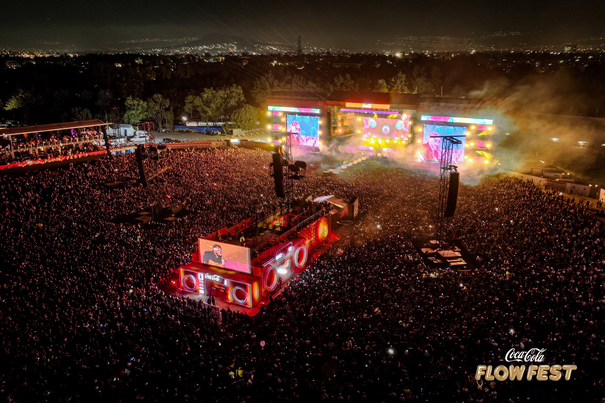
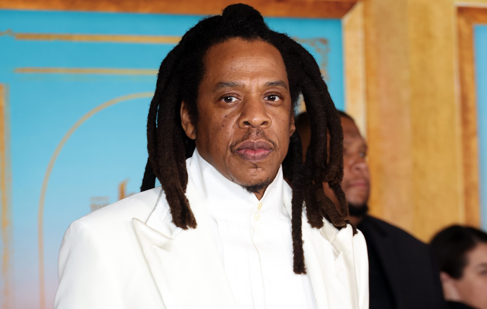
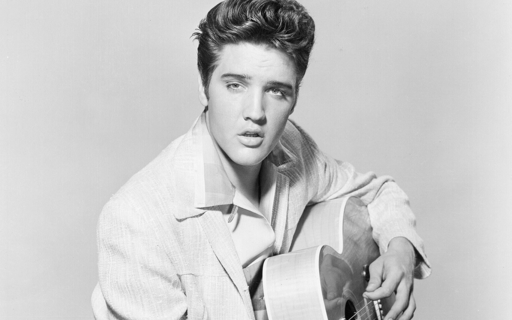
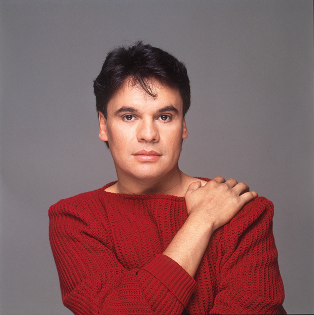
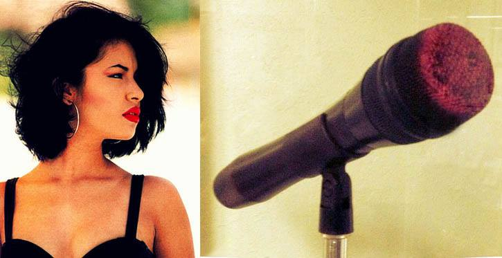
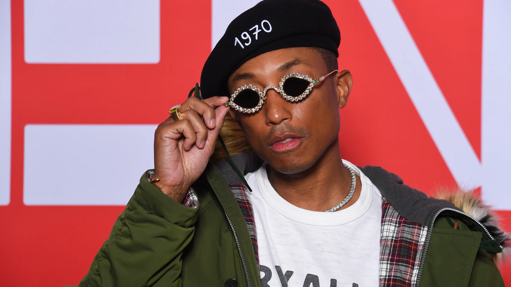
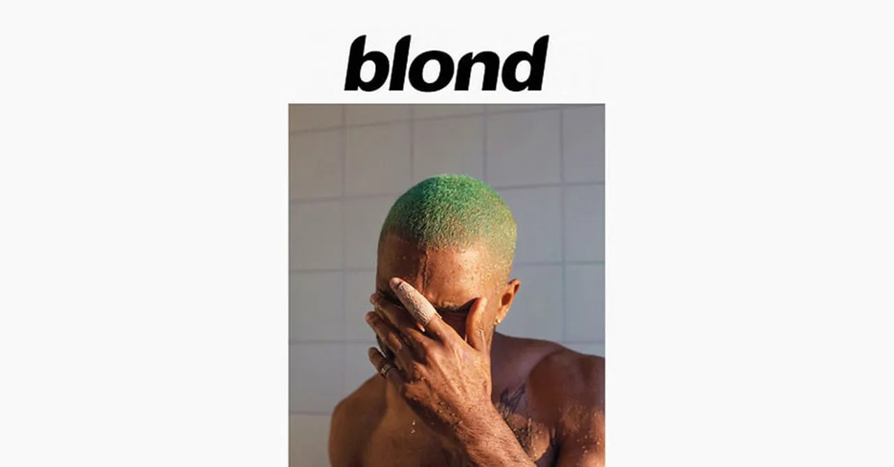

Welcome to Echoes of Sound, your go-to virtual magazine for all things music.
Explore the latest on famous artists, industry curiosities, upcoming events, top
producers, and reviews of both classic and new albums. At Echoes of Sound, we
bring the pulse of the music world directly to you.
Fabrizio Alpuche Beuló is an aspiring software engineer making waves in the digital
publishing world. Residing in Tabasco, Mexico, Fabrizio is a student at the
Universidad
Tecnológica de Tabasco, where he is pursuing a degree in Software Engineering
Management
and Development. With short hair, a trimmed beard, and dark brown eyes, he stands
out
not only for his appearance but also for his innovative contributions to a newly
launched online magazine.
Fabrizio's enthusiasm for music has been a driving force behind his involvement in
the
magazine. He has been instrumental in the development of the magazine's code,
ensuring a
seamless and user-friendly experience for readers. His knack for visual design has
also
helped shape the magazine’s aesthetic, making it visually appealing and engaging.
In his academic journey, Fabrizio has showcased a remarkable talent for combining
technical skills with artistic creativity. This unique blend has allowed him to
contribute significantly to the magazine's layout and thematic direction. His
insights
have helped in crafting a publication that resonates with music lovers and
highlights
the importance of music in human life.
Outside the realm of his studies and the magazine, Fabrizio's artistic flair is
reflected in his personal style. His short hair, neatly trimmed beard, and
expressive
dark brown eyes give him a distinctive presence. His passion for excellence and
creativity continues to drive his success and inspire those around him.
Fabrizio Alpuche Beuló's journey in the world of digital publishing is a testament
to
his dedication and talent. His work in coding and design has been crucial to the
magazine’s early success, marking him as a promising figure in the field. His story
is
one of innovation, passion, and a commitment to making a lasting impact through his
creative endeavors.
Julio
Designer
Julio Miguel Medina Suarez is a 20-year-old student from Tabasco, Mexico, currently
attending the Universidad Tecnológica de Tabasco. Standing at 1.78 meters tall,
Julio
has a café skin tone, brown eyes, and wavy hair. His interests include going to the
gym,
listening to music, and watching series and movies. Julio has made significant
contributions to the design of a webpage and in creating compositions for producers,
showcasing his skills and creativity in digital and musical fields.
Julio is a young man of 20 years, distinguished by his café-colored skin and wavy
hair.
His brown eyes reflect his thoughtful nature, and he maintains a fit lifestyle,
regularly attending the gym. This dedication to fitness complements his 1.78-meter
frame, giving him a strong and healthy appearance.
In his free time, Julio enjoys immersing himself in music and film, appreciating
both
the auditory and visual arts. His hobbies extend beyond passive consumption, as he
actively contributes to the creative world, particularly in digital media and music
composition. Julio's passion for these areas is not only a hobby but a testament to
his
artistic and technical abilities.
Julio has played a pivotal role in designing a webpage, bringing a fresh and modern
aesthetic to the digital space. His involvement in the compositional aspects of
music
production showcases his versatile talents. His work reflects a blend of technical
proficiency and creative insight, making him a valuable contributor to the projects
he
undertakes.
Julio's personality is as dynamic as his interests. His commitment to fitness and
love
for arts reveal a balanced and well-rounded individual. His activities, from going
to
the gym to engaging with different media, indicate a proactive approach to life,
constantly seeking to improve and learn. In summary, Julio Miguel Medina Suarez is a
promising young individual whose talents and interests span a wide range of
disciplines.
Whether in design, music, or personal fitness, he approaches every aspect of his
life
with enthusiasm and dedication.
Manuel
Editor
Jose Manuel Perez Ascencio is a dedicated professional known for his contributions
to a
prominent magazine. Standing at 1.66 meters with a white complexion and wavy hair,
Jose
Manuel has made a significant impact through his work in composition and design. His
expertise lies in creating compositions for tributes to deceased artists and
enhancing
various sections of the magazine with his design skills.
Throughout his career, Jose Manuel has demonstrated a deep passion for the arts and
a
keen eye for detail. His ability to blend creative composition with aesthetic design
has
earned him recognition and respect within the industry. His work not only honors the
legacy of past artists but also adds a unique visual appeal to the magazine, making
it a
standout publication.
Jose Manuel's dedication to his craft is evident in every project he undertakes. His
compositions are marked by their emotional depth and artistic integrity, capturing
the
essence of the artists he commemorates. Meanwhile, his design contributions ensure
that
each page of the magazine is visually engaging and thoughtfully arranged, enhancing
the
reader's experience.
Outside of his professional achievements, Jose Manuel's personal style and presence
reflect his artistic sensibilities. His wavy hair and moreno complexion add to his
distinctive look, making him easily recognizable among his peers. His commitment to
excellence and his creative talents continue to drive his success and influence in
the
world of magazine publishing.
The work of Jose Manuel Perez Ascencio is a testament to his talent and dedication.
His
compositions pay homage to the lives and legacies of artists who have passed, while
his
design work elevates the visual appeal of the magazine. Jose Manuel's contributions
are
invaluable, making him a respected and influential figure in his field. His story is
one
of creativity, dedication, and lasting impact.
Maurisel
Magazine Director
Maurisel Alejandro Santiago Flores is a 20-year-old
individual
born on August 7, 2003, in Villahermosa, Tabasco. With a slender build and standing
at
1.76 meters tall, Maurisel is noted for his wavy hair and handsome appearance. He
enjoys
playing games, programming, and spending quality time with his girlfriend.
Additionally,
Maurisel has made significant contributions to the development of the virtual
magazine
"Echoes of Sound," showcasing his talents and creativity in the digital field.
Maurisel stands at 1.76 meters tall and has a slender build.
His
wavy hair complements his handsome appearance, and he exudes a charismatic aura that
makes him quite appealing.
Maurisel is not only physically at tractive but also
possesses a
delightful and entertaining personality. He is known for being fun-loving and
humorous,
always able to bring a smile to those around him. His cheerful disposition makes him
a
joy to be around, and he has a knack for making even the most mundane moments
enjoyable.
Maurisel has a diverse range of interests that showcase his
dynamic character. He enjoys playing games, programming, and spending quality time
with
his girlfriend. Additionally, he has contributed to the development of the virtual
magazine "Echoes of Sound," showcasing his passion for creative and technical
projects.
Alejandro is a charismatic and talented young man who has
already made notable contributions to various projects. As an aspiring software
engineer
at the Universidad Tecnológica de Tabasco, he is passionate about his career and
enjoys
the challenges it brings. Knowing him has been a pleasure, and his dedication and
enthusiasm suggest a promising future in his chosen field.
Editor's letter Fabrizio Alpuche Beuló
Dear Readers,
Welcome to the latest issue of Echoes of Sound. In this edition, we dive deep into the
vibrant world of music, exploring everything from the legends who shaped the industry to
the fresh faces making waves today. You'll find intriguing stories about iconic
producers, behind-the-scenes insights, and reviews of albums that have defined
generations and those that are setting new trends.
Our team is passionate about bringing you the sounds and stories that matter. We hope
this issue resonates with you and inspires your love for music even more.
Happy reading!
Best regards,
Fabrizio Alpuche Beuló
Editor-in-Chief, Echoes of Sound
In this section, we celebrate the legends of the music
industry who have left an indelible mark on the world. From timeless
classics to groundbreaking innovations, these artists have shaped the
soundtracks of our lives. Join us as we delve into the stories,
achievements, and lasting impact of some of the most famous and influential
musicians in history.
Curiosities
Dive into the fascinating world of music with our
collection of unique facts and behind-the-scenes stories that you won’t find
anywhere else. From surprising anecdotes about your favorite artists to
little-known industry secrets, this section is packed with intriguing
tidbits. Plus, stay up-to-date with the hottest events and concerts
happening around the globe—don’t miss out on the moments that are shaping
the future of music!

Producers
Every great track has a mastermind behind it. In this
section, we shine a light on the legendary producers who have crafted the
sounds that define generations. From the studio wizards who shaped iconic
albums to the innovators pushing the boundaries of music production today,
explore the stories and techniques of the industry’s most influential
producers. Discover how these visionaries turn ideas into hits and continue
to leave their mark on the music world.
Best albums of recent years
Step into the sounds that have defined the past few years
with our curated list of the best albums. These records have not only topped
the charts but also captured the spirit of the times, resonating with
listeners across the globe. From groundbreaking debuts to masterpieces from
seasoned artists, explore the albums that have set new standards in music
and left a lasting impact on the industry.
Anniversary Of UTTAB
Anniversary of UTTAB
Join us in celebrating the anniversary of UTTAB, a milestone that marks
years of dedication, innovation, and excellence. As we look back on the
journey, we honor the achievements that have defined UTTAB's legacy and the
continuous pursuit of progress in every endeavor. This anniversary is not
just a reflection of the past, but a celebration of the future, filled with
new opportunities and aspirations. Here's to the enduring spirit of UTTAB
and the exciting chapters yet to come.
Hospitalidad
La calidez y hospitalidad de los habitantes de Tapijulapa
son incomparables. Los visitantes son recibidos con brazos abiertos y una
sonrisa, haciendo que se sientan como en casa. La disposición de los locales
para compartir sus historias y tradiciones añade un valor incalculable a la
experiencia de visitar este pueblo.
Tapijulapa es un destino que lo tiene todo: belleza natural, riqueza
cultural, deliciosa gastronomía y una hospitalidad sin igual. Este Pueblo
Mágico de Tabasco es el lugar perfecto para desconectar, relajarse y
disfrutar de unas vacaciones inolvidables. ¡Visítalo y descubre por ti mismo
el encanto de Tapijulapa!
Famous Artists
The Beatles
They are considered one of the greatest cultural icons of the 20th
century.
The Beatles, consisting of John Lennon, Paul McCartney, George Harrison, and Ringo Starr,
were formed in Liverpool in 1960. They emerged from the British music scene to become global
superstars. By 1964, they had conquered the American music charts and sparked the "British
Invasion" of the U.S. pop market. Their career spanned a decade, marked by an evolution from
simple pop love songs to complex, groundbreaking musical compositions. The band's influence
extended beyond music into fashion, culture, and social movements, leaving an indelible mark
on the 20th century.
John Lennon often sported round glasses and long hair, giving him a distinctive intellectual
look. Paul McCartney had a clean-cut look with expressive eyes and a charming smile that
made him a fan favorite. George Harrison was recognized for his quiet demeanor, sharp
jawline, and stylish attire, often seen in tailored suits or Indian-inspired clothing. Ringo
Starr was known for his prominent nose, lively expressions, and his unique drumming style.
Their coordinated outfits, such as the famous matching suits and mop-top haircuts, became
iconic symbols of the 1960s. Each member’s individual style contributed to the band's
collective image as both musical innovators and trendsetters.
John Lennon was the outspoken and rebellious member, known for his sharp wit, acerbic humor,
and strong political views. Paul McCartney was the charming, diplomatic, and musically
versatile one, often serving as the band's peacemaker. George Harrison, the quiet and
contemplative guitarist, was deeply spiritual and known for his introspective nature and
philosophical musings. Ringo Starr brought a sense of humor, stability, and reliability,
known for his laid-back personality and infectious laughter. Together, they created a
dynamic and innovative group, with each member bringing their own unique strengths and
talents to the table. Their contrasting personalities and creative differences often fueled
their artistic growth, leading to a rich and varied musical output.
John Lennon was deeply involved in peace activism, often using his music and public
appearances to promote his political beliefs. He also had a passion for visual art and
writing, producing several books of poetry and drawings. Paul McCartney enjoyed painting,
classical music compositions, and exploring avant-garde art forms. He also took an interest
in animal rights activism and environmental causes. George Harrison was passionate about
Indian music and spirituality, frequently visiting India, studying with sitar maestro Ravi
Shankar, and incorporating Indian instruments and philosophies into his music. He was also
an avid gardener. Ringo Starr loved acting and appeared in various films and TV shows, both
during and after his time with The Beatles. He also pursued a solo music career, releasing
several albums. Collectively, The Beatles were avid songwriters and performers, constantly
experimenting with new sounds, recording techniques, and musical genres, pushing the
boundaries of popular music.
The Beatles revolutionized music with their innovative approach to songwriting, recording,
and performing. They remain beloved worldwide for their timeless hits, profound impact on
popular culture, and the way they broke down barriers between musical genres. Each member
brought unique qualities to the band, creating a synergy that resonated with audiences
across generations. Their legacy endures, as they continue to inspire musicians and fans
alike. The band's journey from Liverpool to global stardom is a testament to their talent,
creativity, and enduring appeal. Their music, from the early days of "Please Please Me" and
"She Loves You" to the experimental sounds of "Sgt. Pepper's Lonely Hearts Club Band" and
"Abbey Road," remains a cornerstone of modern music, showcasing their growth and versatility
as artists.

Jay-Z
He is one of the most economically successful hip-hop artists in
the United States and worldwide.
Shawn Corey Carter, known professionally as Jay-Z, was born on December 4, 1969, in
Brooklyn, New York. He began his music career in the late 1980s and rose to fame with the
release of his debut album, Reasonable Doubt, in 1996. Jay-Z quickly established himself as
a formidable force in the hip-hop industry, known for his intricate lyrics and business
acumen. Over the years, he has released numerous critically acclaimed albums, becoming one
of the best-selling music artists in the world. Jay-Z's influence extends beyond music, as
he has become a successful entrepreneur, philanthropist, and cultural icon.
Jay-Z is known for his tall, imposing figure and charismatic presence. He often sports a
clean-cut look with neatly groomed hair and a well-maintained beard. His style has evolved
over the years, from the oversized jerseys and baggy jeans of the '90s to the tailored suits
and sophisticated attire he favors today. Jay-Z's fashion sense reflects his journey from
the streets of Brooklyn to the boardrooms of major corporations. His distinct features
include a strong jawline, expressive eyes, and a confident demeanor that commands attention.
Jay-Z is renowned for his sharp intellect, strategic thinking, and business savvy. He
possesses an unparalleled work ethic and a relentless drive for success. Known for his calm
and collected demeanor, Jay-Z rarely shows emotion publicly, maintaining a stoic and
composed persona. He is a visionary, always looking ahead and seeking new opportunities.
Despite his success, Jay-Z remains grounded, often reflecting on his humble beginnings and
the challenges he has overcome. His lyrics frequently explore themes of ambition,
perseverance, and the complexities of life in the spotlight.
Beyond his music career, Jay-Z is a prolific entrepreneur with ventures in various
industries, including fashion, sports, and technology. He co-founded Roc-A-Fella Records,
which launched his career, and later founded Roc Nation, a full-service entertainment
company. Jay-Z is also the owner of the luxury champagne brand Armand de Brignac and the
streaming service Tidal. He is passionate about social justice and philanthropy, actively
supporting initiatives related to education, criminal justice reform, and economic
empowerment. Jay-Z is an avid art collector and has a keen interest in contemporary and
modern art.
Jay-Z is widely regarded as one of the greatest rappers of all time, praised for his lyrical
prowess, storytelling ability, and impact on the hip-hop genre. His success as a businessman
has set new standards for artists, demonstrating that it is possible to achieve greatness
both on and off the stage. Jay-Z's journey from a troubled youth in Brooklyn to a global
icon is a testament to his resilience, determination, and visionary mindset. He continues to
inspire millions around the world with his music, philanthropy, and entrepreneurial
ventures, leaving an indelible mark on the cultural landscape. His legacy is one of breaking
barriers, challenging norms, and consistently striving for excellence.
Daft Punk
Daft Punk was a French electronic and rock-electronic duo formed in
1993 in Paris.
Thomas Bangalter and Guy-Manuel de Homem-Christo are rarely seen without their iconic robot
helmets and gloves. These helmets, sleek and futuristic, are integral to their identity,
making them instantly recognizable. Bangalter's helmet features a streamlined, silver design
with an LED display, while Homem-Christo's is gold with a more rounded shape. The duo's
commitment to this robotic image extended to their public appearances and performances,
creating an aura of mystery. Their outfits, often consisting of black leather jackets and
metallic gloves, complemented the high-tech aesthetics of their helmets, reinforcing their
otherworldly persona.
Daft Punk's personalities are as intriguing as their music. Despite their global fame, they
maintained a high level of privacy, rarely giving interviews or making public appearances
without their helmets. This decision was driven by a desire to let their music speak for
itself, unencumbered by personal fame. They were known for their perfectionism and
meticulous approach to music production, often spending years on a single album. Their
dedication to their craft, combined with their innovative spirit, set them apart in the
music industry. Their enigmatic nature added to their allure, making them cult figures in
the world of electronic music.
Outside of their work as Daft Punk, both members engaged in various other projects and
hobbies. Thomas Bangalter was involved in several film projects, contributing to soundtracks
and even directing a short film. He also co-founded the record label Roulé, which played a
significant role in the French house scene. Guy-Manuel de Homem-Christo co-founded the
record label Crydamoure, which focused on house music. Both were avid collectors of vintage
synthesizers and other music equipment, which they used to craft their unique sound. Their
interests in film and music production showcased their multifaceted talents and passion for
the arts.
Daft Punk's influence on music and pop culture is immense. They are credited with
revolutionizing electronic music, blending house, funk, disco, and rock to create a
distinctive sound. Their albums, such as "Homework," "Discovery," and "Random Access
Memories," received critical acclaim and commercial success. Hits like "Around the World,"
"One More Time," and "Get Lucky" became anthems of a generation. Their live performances,
especially the 2006-2007 "Alive" tour, are legendary for their visual and auditory
spectacle. Daft Punk's impact extends beyond music, influencing fashion, film, and the
broader cultural landscape with their futuristic aesthetic and boundary-pushing creativity.
Daft Punk, with their iconic robotic image and groundbreaking music, left an indelible mark
on the world of electronic music. Their innovative approach to sound, combined with a
commitment to privacy and artistic integrity, made them legends in their own time. They
redefined what it meant to be musicians in the digital age, blending technology and artistry
in ways that continue to inspire. Daft Punk's legacy is one of transformation, creativity,
and enduring influence, forever changing the landscape of music and pop culture. Their story
is one of two individuals who, by embracing the future, became timeless icons.
Beethoven
His musical legacy spans, chronologically, from Classicism to the
beginning of Romanticism.
Ludwig van Beethoven, one of the most significant composers in the history of music, was
born in Bonn, Germany, in 1770. His musical talent was evident from an early age, and he
soon became a prominent figure in the classical music world. His body of work spans a wide
range of genres, including symphonies, concertos, chamber music, and operas, each showcasing
his genius and innovative spirit.
Throughout his life, Beethoven faced numerous challenges, including a progressive loss of
hearing that began in his late twenties. Despite this difficulty, he continued to compose
and create masterpieces such as his Fifth and Ninth Symphonies. His ability to overcome
adversity and continue producing high-quality music makes him a symbol of perseverance and
determination.
Beethoven was known for his passionate and intense personality. Often described as
temperamental and difficult, he was also deeply humanitarian with a strong sense of justice.
These qualities are reflected in his music, which often conveys profound emotion and
powerful narrative force. His influence extends far beyond his time, and his legacy
continues to inspire musicians and composers around the world.
In addition to his achievements as a composer, Beethoven was also a talented pianist. His
piano concertos and sonatas are considered some of the most important works in the piano
repertoire. His innovative approach to musical form and structure laid the groundwork for
the development of classical music in the nineteenth century and beyond.
Beethoven's work, with its ability to evoke a wide range of emotions and its innovative use
of musical form and structure, has left an indelible mark on the history of music. From his
famous "Ode to Joy" in the Ninth Symphony, which has become a hymn of humanity, to his
intimate piano sonatas, his music continues to resonate powerfully in the modern world.
Beethoven's story is a testament to the power of art to transcend personal limitations and
the barriers of his time, making him a truly timeless figure.

Elvis Presley
Nicknamed «the king of rock and roll», he is considered one of the
most popular cultural icons of the 20th century.
Elvis Presley, known as the "King of Rock and Roll," was born in Tupelo, Mississippi, in
1935. He rose to fame in the mid-1950s and quickly became an international sensation. His
unique voice, charismatic stage presence, and groundbreaking musical style revolutionized
the music industry and left an enduring impact on popular culture.
Throughout his career, Elvis released numerous hit songs, such as "Heartbreak Hotel," "Hound
Dog," "Jailhouse Rock," and "Suspicious Minds." His music blended elements of rock, blues,
country, and gospel, creating a sound that was both innovative and widely appealing. Elvis's
energetic performances, complete with his signature dance moves, captivated audiences and
set new standards for live entertainment.
Beyond his music, Elvis was also a talented actor, starring in over 30 films during his
career. His films, such as "Love Me Tender," "Jailhouse Rock," and "Viva Las Vegas,"
showcased his versatility and helped solidify his status as a cultural icon. Despite his
immense success, Elvis faced personal challenges, including struggles with addiction and
health issues, which ultimately led to his untimely death in 1977.
Elvis's influence extended beyond music and film; he became a symbol of youth rebellion and
a catalyst for social change in the 1950s and 1960s. His style, characterized by his iconic
pompadour hairstyle, flashy outfits, and confident demeanor, inspired countless artists and
fans alike. Elvis's legacy is reflected in the ongoing popularity of his music and the
continued reverence for his contributions to entertainment.
The impact of Elvis Presley on music and pop culture is immeasurable. He is credited with
helping to break down racial barriers in the music industry by bringing African American
musical influences into the mainstream. Elvis's enduring legacy is celebrated by millions of
fans around the world, and his home, Graceland, remains a pilgrimage site for admirers.
Elvis Presley's story is one of talent, innovation, and lasting influence, making him an
everlasting figure in the history of music.

Juan Gabriel
He is considered as one of the most successful artists in Latin
America
Juan Gabriel, born Alberto Aguilera Valadez in Parácuaro, Michoacán, Mexico, in 1950, was
one of the most beloved and influential figures in Latin American music. Known as "El Divo
de Juárez," he captivated audiences with his powerful voice, emotive performances, and
prolific songwriting, becoming a cultural icon in Mexico and beyond.
Throughout his career, Juan Gabriel released numerous hit songs, such as "Querida," "Hasta
Que Te Conocí," "Amor Eterno," and "Abrázame Muy Fuerte." His music seamlessly blended
ranchera, mariachi, pop, and ballad genres, appealing to a wide range of listeners. His
heartfelt lyrics and passionate delivery resonated deeply with fans, making his songs
timeless classics.
In addition to his success as a singer, Juan Gabriel was a gifted songwriter who composed
over 1,800 songs, many of which were recorded by other prominent artists. His songwriting
prowess earned him widespread acclaim and numerous awards throughout his career. Despite
facing personal challenges, including a difficult childhood and struggles with acceptance
due to his sexuality, Juan Gabriel's resilience and talent shone through in his music.
Juan Gabriel's stage presence was nothing short of spectacular. Known for his flamboyant
outfits and theatrical performances, he brought a unique energy and charisma to every show.
His concerts were not just musical events but emotional experiences that left a lasting
impression on his audiences. His ability to connect with fans on a personal level made him a
cherished figure in the music world.
The legacy of Juan Gabriel is marked by his contributions to the evolution of Latin music
and his impact on multiple generations of listeners. His work helped popularize Mexican
music globally, and his influence can be seen in the countless artists he inspired. Juan
Gabriel's music continues to be celebrated and cherished, ensuring that his legacy lives on.
His story is one of immense talent, cultural significance, and enduring influence, cementing
his place as a legendary figure in the history of music.
Curiosities and Events...

Selena's Microphone
The microphone is a standard handheld model, silver in color with a sleek, metallic finish.
It features a grille at the top to capture her powerful voice. The most distinctive feature
is the noticeable lipstick stain near the grille, a testament to her dynamic stage presence.
This stain, in a vivid red hue, has become an iconic symbol of her last performance. The
microphone's design is both functional and aesthetically appealing, reflecting the era's
technology while carrying the weight of Selena's legacy. The metallic body has a polished
shine, indicating it was well-maintained, and the lipstick stain stands out starkly against
this backdrop, capturing a moment frozen in time.
The microphone is cylindrical, approximately 20 centimeters in length, fitting comfortably
in Selena's hand during her energetic performances. Its ergonomic design allowed her to move
freely on stage, engaging with her audience. This particular microphone, though similar to
others she used, is unique due to the lipstick mark. It was used extensively during her
final concert, capturing the powerful and emotional delivery of her music. Its size and
shape were ideal for live performances, ensuring clear sound projection. Selena's dynamic
use of the microphone, from belting out high-energy songs to tender ballads, highlights its
versatility and essential role in her performances.
Beyond its physical attributes, the microphone holds deep historical significance. It was
present during Selena's last performance, making it a cherished relic among fans. The
lipstick stain has become a symbol of her vivacity and connection with her audience. This
artifact encapsulates the essence of her final moments on stage, where she delivered a
memorable performance that is still celebrated today. The microphone represents not just a
tool of her trade but a lasting piece of her musical journey. It stands as a silent witness
to her talent, charm, and the love she shared with her fans, encapsulating a piece of music
history that is deeply personal and universally significant.
The microphone stained with Selena Quintanilla's lipstick is more than an ordinary object;
it is a piece of musical history imbued with emotional resonance. It captures the spirit of
her final performance, serving as a tangible link to her legacy. Fans and historians alike
revere this microphone, not only for its association with her last concert but also for the
personal touch it carries. The lipstick stain immortalizes Selena's presence, reminding us
of her talent, charisma, and the indelible mark she left on the world of music. It stands as
a cherished relic, a bridge between the vibrant life she led and the timeless impact she
continues to have on music and culture.
The Piano of John Lennon
The piano of John Lennon, often referred to as the "Imagine Piano," is an upright Steinway
Model Z. It gained legendary status for being the instrument on which Lennon composed and
recorded the iconic song "Imagine" in 1971. This piano, with its simple yet elegant design,
has become a symbol of peace and hope. The instrument is known for its distinctive, warm
sound that played a pivotal role in creating one of the most beloved anthems of all time.
The piano is characterized by its traditional upright design and polished wood finish. It
features a standard keyboard with 88 keys, offering a rich tonal range. Despite its
relatively simple aesthetic compared to grand pianos, its craftsmanship and sound quality
are exceptional. The piano has a few minor scuffs and scratches, testifying to its age and
the numerous sessions Lennon spent at the keys. The pedals and internal mechanics are in
excellent condition, providing a responsive touch and rich, resonant sound.
This piano's significance goes beyond its musical capabilities; it represents a message of
peace and unity that Lennon passionately advocated. It was at this piano that Lennon played
during intimate recording sessions, crafting lyrics and melodies that would resonate across
generations. The piano has since been associated with not only Lennon's legacy but also with
global peace movements. It stands as a testament to the power of music to inspire change and
promote harmony.
The Imagine Piano remains a cherished artifact in the world of music. It evokes a sense of
nostalgia and reverence among fans and historians alike. The instrument is often displayed
at exhibitions, where it draws large crowds eager to connect with a piece of Lennon's
legacy. For many, seeing the piano is an emotional experience, bringing back memories of
Lennon's hopeful message. The piano's story and the music it helped create continue to
inspire, making it an enduring symbol of artistic expression and social impact.
The Red Jacket of Michael Jackson
The red military jacket worn by Michael Jackson is one of the most iconic pieces of clothing
in pop culture history. It gained immense popularity when Jackson wore it in the music video
for "Thriller," released in 1983. The jacket was designed by Deborah Nadoolman Landis and
became synonymous with Jackson's image and the fashion of the 1980s. The red jacket, with
its military-inspired design, symbolizes Jackson's groundbreaking and influential style in
the music industry.
The jacket is a bright red, made of leather, and features black detailing. It is adorned
with gold embellishments, including epaulets on the shoulders and a series of gold buttons
running down the front. The sleeves and cuffs are also accentuated with black leather,
giving the jacket a structured and sophisticated look. The high collar and fitted design
highlight Jackson's slim figure, while the bold color and shiny material make it visually
striking. The jacket's design elements, such as the use of contrasting colors and
military-inspired decorations, set it apart as a unique piece of fashion.
Michael Jackson's red military jacket has been widely recognized and imitated. It became a
cultural phenomenon, with many fans and impersonators adopting the jacket as part of their
costumes. The jacket has been featured in various performances and tributes to Jackson,
underscoring its lasting influence. It has also appeared in exhibitions and has been sold at
auctions, where it fetched high prices, reflecting its value as a piece of music and fashion
history. The jacket's influence extends beyond music, as it has been referenced and parodied
in various media, showcasing its widespread impact.
The red military jacket of Michael Jackson is not only a fashion statement but also a piece
of cultural heritage. It embodies the innovation and creativity that Jackson brought to the
music industry. Fans and collectors cherish the jacket, and it continues to be a symbol of
Jackson's legacy. The emotions associated with the jacket range from nostalgia to
admiration, as it reminds people of Jackson's extraordinary talent and the impact he had on
the world. The jacket remains a testament to the enduring appeal of Michael Jackson and his
contributions to music and fashion.
Tomorrowland
Tomorrowland is a world-renowned electronic dance music festival held annually in Boom,
Belgium. It first took place in 2005 and has since grown into one of the most iconic music
events globally, attracting thousands of attendees from over 200 countries. The festival is
typically held over two weekends in July and features a wide array of EDM genres. It is
celebrated for its vibrant atmosphere, spectacular stage designs, and diverse lineup of
artists. The primary reason for Tomorrowland's popularity is its unique ability to combine
music, art, and culture, creating an immersive experience that transcends a typical music
festival.
The preparations for Tomorrowland begin months in advance and involve meticulous planning
and coordination. The festival is known for its elaborate and fantastical stage designs,
each year presenting a new theme that transforms the festival grounds into a magical
wonderland. The construction process involves building intricate stages, installing
state-of-the-art sound and lighting systems, and creating immersive visual art
installations. The decor often includes elements like waterfalls, fireworks, and
pyrotechnics, enhancing the magical atmosphere. In addition to the physical setup, logistics
such as security, medical services, and transportation are carefully arranged to ensure a
safe and seamless experience for attendees.
Tomorrowland offers a plethora of activities beyond its world-class musical performances.
The festival features multiple stages, each catering to different sub-genres of electronic
dance music, allowing attendees to explore a wide range of sounds and styles. The festival
grounds are dotted with art installations and themed areas that encourage exploration and
interaction. Attendees can participate in workshops, attend meet-and-greets with artists,
and even experience thrilling rides and attractions. The festival's attention to detail is
evident in every corner, from the design of the stages to the decorations that adorn the
walkways, creating an all-encompassing sensory experience.
Food and drink are integral parts of the Tomorrowland experience. The festival offers a
diverse selection of culinary delights, from gourmet meals to street food, catering to
various tastes and dietary preferences. Numerous bars and drink stations are strategically
placed around the venue, offering everything from craft beers to exotic cocktails. The
Dreamville camping area is another highlight, providing a vibrant community space where
attendees can relax and socialize. Dreamville hosts its own set of activities, including
yoga sessions, barbecue gatherings, and even a marketplace for shopping. These amenities
contribute to the overall comfort and enjoyment of the festival, making it a well-rounded
experience.
For many attendees, Tomorrowland is not just a festival but a transformative experience. The
sense of unity and connection among the crowd is palpable, as people from all walks of life
come together to celebrate music and culture. The festival's enchanting environment, coupled
with its world-class performances and immersive activities, leaves a lasting impression on
all who attend. The feelings of joy, freedom, and belonging experienced at Tomorrowland are
often described as unparalleled, making it a must-visit event for EDM enthusiasts worldwide.
The festival's commitment to delivering an exceptional experience year after year ensures
its continued popularity and cherished status among its global community.
Coca Cola Flow Fest
The Coca Cola Flow Fest is an annual urban music festival held in Mexico City, Mexico.
Launched in 2018, this event has quickly become a significant platform for Latin American
reggaeton and urban music, drawing massive crowds each year. The festival typically takes
place in November at the Autódromo Hermanos Rodríguez, a renowned venue known for hosting
large-scale events. The Flow Fest is celebrated for bringing together some of the biggest
names in reggaeton, trap, and Latin urban music, offering fans a day filled with energetic
performances and vibrant atmospheres. The festival's purpose is to celebrate the genre's
explosive growth and provide a space where fans can enjoy their favorite artists live.
Preparations for the Coca Cola Flow Fest involve extensive planning and coordination. The
festival's setup includes multiple stages, each featuring cutting-edge sound and lighting
equipment to enhance the live music experience. The design often includes vibrant visual
displays and thematic decorations that reflect the urban and energetic nature of the music
genre. Logistics are meticulously managed, from ticketing and entry procedures to security
measures and medical services, ensuring a safe and enjoyable experience for all attendees.
Additionally, the festival organizers work closely with vendors and sponsors to provide a
wide range of food, beverages, and merchandise, adding to the overall festive atmosphere.
The Coca Cola Flow Fest offers more than just musical performances. The festival boasts a
diverse lineup of artists from across the Latin urban music spectrum, with multiple stages
hosting simultaneous performances. This setup allows attendees to explore different musical
styles and discover new artists. Beyond the music, the festival features various interactive
zones and activities. These include photo booths, graffiti walls, and dance contests,
encouraging attendees to engage with the event creatively. The vibrant ambiance is further
enhanced by dancers, performers, and visual artists who contribute to the festival's dynamic
atmosphere.
Food and drink are essential components of the Coca Cola Flow Fest experience. The festival
offers a wide array of culinary options, from traditional Mexican street food to
international cuisines, catering to diverse tastes and preferences. Numerous beverage stands
provide refreshing drinks, including Coca-Cola products and other soft drinks, to keep the
crowd hydrated and energized. The festival also features VIP areas that offer exclusive
amenities such as premium seating, private bars, and luxury facilities, providing a more
comfortable and upscale experience for attendees who choose this option. These amenities
contribute to the overall convenience and enjoyment of the festival.
The Coca Cola Flow Fest is more than just a music festival; it is a celebration of Latin
urban culture. Attendees often describe the experience as exhilarating and unforgettable,
with a strong sense of community and shared passion for the music. The festival's lively
environment, coupled with its high-energy performances and diverse activities, creates an
electric atmosphere that resonates with fans. The Flow Fest is a testament to the growing
influence of reggaeton and urban music, providing a platform for artists and fans alike to
come together and celebrate the genre. The festival continues to attract thousands of
attendees, solidifying its place as a premier event in the Latin American music scene.
Tecate Pa´l Norte
Tecate Pa'l Norte is one of Mexico's most prominent music festivals, held annually in
Monterrey, Nuevo León. Since its inception in 2012, the festival has quickly gained a
reputation for its diverse lineup and vibrant atmosphere, drawing both local and
international audiences. The event typically takes place over a weekend in March or April at
the expansive Parque Fundidora, a venue known for its scenic beauty and large capacity. The
festival's primary goal is to showcase a wide range of musical genres, from rock and indie
to electronic and Latin music, offering something for everyone. Its growth and popularity
reflect the increasing demand for large-scale music events in Mexico.
Preparations for Tecate Pa'l Norte are extensive, involving months of planning and
coordination. The festival's infrastructure includes multiple stages, each equipped with
state-of-the-art sound and lighting systems. The stages are meticulously designed to
accommodate the different genres and performance styles of the artists. The venue is
transformed into a lively festival ground with colorful decorations, art installations, and
themed areas that reflect the cultural diversity of the music. Logistics such as security,
medical services, and crowd control are carefully planned to ensure a safe environment.
Additionally, a wide range of food vendors is curated to provide a variety of culinary
experiences, from traditional Mexican dishes to international favorites.
The festival offers a rich variety of activities beyond the main musical performances. With
multiple stages, attendees can explore different musical acts throughout the day, ranging
from well-known international headliners to emerging local talent. In addition to live
music, the festival includes interactive experiences such as art installations, photo
opportunities, and meet-and-greets with artists. The atmosphere is further enlivened by
roving performers, including dancers, circus acts, and street artists, creating a dynamic
and immersive experience. The festival also features brand activations and sponsor booths,
offering attendees unique experiences and giveaways.
Tecate Pa'l Norte is also known for its exceptional culinary offerings. The festival
features a diverse selection of food and beverage options, catering to a wide range of
tastes. Attendees can enjoy everything from gourmet meals to classic festival snacks, with a
particular emphasis on local Mexican cuisine. Beverage options include a variety of
alcoholic and non-alcoholic drinks, with special emphasis on Tecate products, the festival's
main sponsor. The festival also provides VIP areas with exclusive amenities such as private
bars, elevated viewing platforms, and luxurious seating, offering a premium experience for
those who opt for it.
Tecate Pa'l Norte is celebrated not just as a music festival but as a cultural experience
that brings people together. Attendees often describe the event as exhilarating and
inclusive, with a welcoming atmosphere that embraces diversity. The festival's blend of
music, art, food, and interactive experiences creates a unique environment that appeals to a
broad audience. The positive energy and sense of community at Tecate Pa'l Norte make it a
must-attend event for music lovers. The festival continues to grow in scale and reputation,
solidifying its status as a cornerstone of Mexico's music festival circuit and attracting
music fans from all over the world.
Famous Producers...
Kanye West
Kanye West, born on June 8, 1977, in Atlanta, Georgia, and raised in Chicago, Illinois, is a
multifaceted American rapper, singer, songwriter, record producer, and fashion designer.
Known for his groundbreaking and genre-defying work, Kanye has been a dominant force in the
music industry since the early 2000s. He first gained fame as a producer for Roc-A-Fella
Records, where he produced hit singles for artists like Jay-Z and Alicia Keys. Kanye's solo
career took off with the release of his debut album, The College Dropout (2004), which was
met with critical acclaim and commercial success. His music is characterized by its
innovative production, thought-provoking lyrics, and ability to blend various genres,
including hip-hop, soul, electronic, and gospel.
Kanye is often recognized for his distinctive fashion sense and bold personal style. He
frequently wears avant-garde and high-fashion clothing, often setting trends in the fashion
industry. Kanye is known for his collaborations with major fashion brands and his own
successful clothing line, Yeezy, which has become iconic in streetwear culture. His
appearance is characterized by his confident demeanor, often sporting minimalist and
monochromatic outfits that align with his brand's aesthetic.
Kanye is known for his outspoken and often controversial personality. He is a creative
visionary who has consistently pushed the boundaries of music, fashion, and art. Kanye's
work often reflects his introspective and philosophical nature, exploring themes of fame,
mental health, and societal issues. He has a reputation for being ambitious and driven,
often taking on multiple roles in his projects, from producing and rapping to directing and
designing. Despite facing criticism for some of his statements and actions, Kanye remains a
highly influential figure in pop culture.
Beyond music, Kanye has made significant contributions to fashion and design. He has
launched several clothing lines and collaborated with major brands like Nike and Adidas. His
Yeezy sneakers are particularly popular and have a cult following. Kanye is also involved in
various philanthropic efforts, including supporting education and community initiatives. In
addition to his professional endeavors, he has shown interest in architecture and has
expressed a desire to create innovative housing solutions. Kanye is also known for his foray
into politics, having run for President of the United States in 2020.
Kanye West's influence extends far beyond music; he is often seen as a cultural icon and a
polarizing figure. Fans admire his creativity and his willingness to challenge conventions,
while critics sometimes take issue with his public statements and behavior. Regardless of
differing opinions, Kanye's impact on the music and fashion industries is undeniable. He has
won numerous awards, including multiple Grammy Awards, and his albums are often regarded as
masterpieces. Kanye's work continues to inspire and provoke thought, making him one of the
most compelling artists of his generation.
Mike Dean
Mike Dean, born on March 1, 1965, in Angleton, Texas, is a renowned American record
producer, audio engineer, songwriter, and multi-instrumentalist. He is widely recognized for
his extensive work in the hip hop and pop music industries. Mike Dean's career began in the
late 1980s when he started working with Houston rap artists, helping to shape the sound of
Southern rap. Over the years, he has collaborated with numerous high-profile artists,
including Kanye West, Travis Scott, Kid Cudi, Beyoncé, and Madonna. His influence and
contributions have been pivotal in crafting some of the most iconic albums in recent music
history.
Mike Dean is often seen with his long hair and casual attire, typically consisting of black
clothing and a laid-back style. He frequently sports a beard and is known for his distinct
look that complements his behind-the-scenes role in the music industry. Dean's appearance
reflects his persona as a seasoned veteran in the music world, with a focus on authenticity
and artistry over mainstream image.
Dean is known for his meticulous approach to music production and his exceptional skills as
a multi-instrumentalist. He is proficient in playing keyboards, synthesizers, guitars, and
other instruments, often incorporating these elements into his productions. As a producer
and engineer, Dean is revered for his ability to create lush, atmospheric soundscapes and
his innovative use of synthesizers and live instruments. His work is characterized by a
blend of electronic and organic sounds, often pushing the boundaries of traditional music
genres. Despite his extensive influence, Dean maintains a low-key public persona, preferring
to let his work speak for itself.
Beyond his work in the studio, Mike Dean is also an accomplished live performer. He has
played instruments on tour for artists like Kanye West and Travis Scott, showcasing his
versatility as a musician. Dean is passionate about analog synthesizers and often shares his
knowledge and experiences with these instruments. He has a keen interest in sound design and
often experiments with new technologies and equipment to enhance his productions.
Additionally, Dean has been involved in music education, sharing his expertise with aspiring
producers and musicians.
Mike Dean is highly respected in the music industry for his technical expertise and artistic
vision. Fans and fellow musicians admire his contributions to the evolution of modern hip
hop and pop music. His work has been integral to the success of many critically acclaimed
projects, and he is often regarded as a "secret weapon" in the studio. Dean's dedication to
his craft and his ability to adapt to changing musical landscapes have solidified his
reputation as one of the most influential producers of his generation. His work continues to
inspire and shape the sound of contemporary music.
Tainy
Tainy (real name: Marco Masís) is a highly influential Puerto Rican music producer and
songwriter known for shaping the sound of modern Latin music. He was born on August 9, 1989,
in San Juan, Puerto Rico. Tainy's work has played a pivotal role in the global spread of
reggaeton and Latin trap, bringing these genres to new heights and audiences around the
world. He started his career at a young age, quickly rising to prominence for his innovative
production style and collaboration with top artists.
Tainy is often recognized by his distinctive style, which includes casual and contemporary
streetwear that reflects his urban and modern music influences. He typically sports a clean
look, often seen with a fresh haircut and a composed, understated demeanor, allowing his
work and achievements to speak for themselves rather than relying on flashy appearances.
Known for his reserved and focused nature, Tainy prefers to let his music do the talking. He
is deeply passionate about his craft, showing a meticulous attention to detail in his
productions. His humility and dedication are evident in his willingness to stay behind the
scenes, crafting hits for other artists rather than seeking the spotlight. Despite his
low-key persona, he commands great respect in the music industry for his talent and
professionalism.
Besides music production, Tainy is involved in various aspects of the music business,
including his work with NEON16, a talent incubator he co-founded. This platform helps
nurture new talent and explore innovative music projects. Tainy enjoys experimenting with
different sounds and genres, often blending elements from various musical styles to create
unique and compelling tracks. He is also known to enjoy spending time in the studio,
continuously honing his skills and exploring new creative avenues.
Fans and peers often describe Tainy as a visionary producer who has revolutionized Latin
music. His contributions have not only shaped the careers of numerous artists but also set
new trends in the industry. His work has earned him multiple accolades, including Latin
Grammy Awards, underscoring his impact and influence. Tainy remains an inspiring figure for
many aspiring producers and musicians, admired for his ability to blend commercial success
with artistic integrity.
Metro Boomin
Metro Boomin, born Leland Tyler Wayne on September 16, 1993, in St. Louis, Missouri, is an
American record producer, DJ, and songwriter. He is widely recognized as one of the leading
figures in modern hip-hop production. Metro Boomin began his career at a young age,
initially making beats in his mother's basement and quickly gaining traction within the
hip-hop community. His early collaborations with artists like Future, 21 Savage, and Drake
helped solidify his status as a top-tier producer, known for his signature dark and
atmospheric production style.
Metro Boomin typically presents himself with a stylish yet understated look. He is often
seen wearing casual streetwear, including designer hoodies, jeans, and sneakers. He
sometimes sports a bandana or cap, adding to his distinctive style. His appearance is
generally low-key, focusing more on comfort and practical style rather than flashy or
extravagant fashion choices. This simplicity reflects his focus on music and production over
public image.
Metro Boomin is known for his quiet and introspective nature, often letting his music speak
for him. He is highly respected in the industry for his work ethic and dedication to his
craft. Despite his reserved demeanor, Metro Boomin has a strong presence in the music
industry, characterized by his keen ear for talent and ability to craft hits. He is
detail-oriented and innovative, constantly experimenting with new sounds and techniques to
push the boundaries of hip-hop production.
Apart from his work in music production, Metro Boomin has shown interest in various aspects
of the entertainment industry. He has worked as a DJ, performing at various events and
festivals. He also engages in entrepreneurial activities, having launched his own record
label, Boominati Worldwide, to support emerging artists. Outside of music, Metro Boomin
enjoys spending time with friends and family and has expressed an interest in fashion and
design, occasionally collaborating on fashion projects.
Fans and colleagues often describe Metro Boomin as a visionary producer with an uncanny
ability to create chart-topping hits. His work has significantly shaped the sound of
contemporary hip-hop, earning him widespread acclaim and numerous awards, including BET Hip
Hop Awards and Grammy nominations. He is appreciated not only for his technical skills but
also for his ability to bring out the best in the artists he collaborates with. Metro
Boomin's influence continues to grow, as he remains a pivotal figure in the evolution of
hip-hop and popular music.

Pharrell Williams
Pharrell Williams, born on April 5, 1973, in Virginia Beach, Virginia, is a multi-talented
American singer, rapper, songwriter, record producer, and fashion designer. He is best known
as the lead vocalist of the hip hop and rock band N.E.R.D. and as one half of the production
duo The Neptunes, alongside Chad Hugo. Pharrell's career began in the early 1990s, and he
quickly rose to fame for his unique production style and smooth falsetto voice. Over the
years, he has worked with a wide range of artists, from Britney Spears and Jay-Z to Daft
Punk and Kendrick Lamar, establishing himself as a versatile and innovative figure in the
music industry.
Pharrell is often recognized for his youthful appearance and distinctive fashion sense. He
frequently wears stylish, contemporary clothing, often blending streetwear with high
fashion. His signature accessory has been the Vivienne Westwood "Buffalo" hat, which he
popularized in the early 2010s. Pharrell also often wears jewelry and watches that
complement his outfits, adding a touch of elegance to his casual yet sophisticated style.
His appearance is marked by a consistently fresh and vibrant aesthetic, reflecting his
creative personality.
Pharrell Williams is known for his positive and humble demeanor. He often exudes a calm and
introspective aura, coupled with an infectious enthusiasm for life and creativity. As an
artist, he is highly innovative, known for pushing the boundaries of genres and blending
different musical styles. Pharrell's work is often characterized by its uplifting and
optimistic messages, as seen in his hit song "Happy." He is also deeply involved in
philanthropy, supporting various causes related to education, environmental sustainability,
and social justice.
Beyond music, Pharrell is a prolific entrepreneur and fashion designer. He co-founded the
clothing lines Billionaire Boys Club and Ice Cream Footwear, which are popular in the
streetwear fashion scene. He has also ventured into film production and has been involved in
several charitable initiatives. Pharrell is passionate about promoting creativity and
education, evident in his involvement with initiatives like the "From One Hand To AnOTHER"
foundation, which supports underserved youth. He also enjoys skateboarding and has been a
cultural influencer in the skateboarding community.
Pharrell Williams is celebrated not only for his musical talents but also for his positive
impact on culture and society. His ability to seamlessly blend various artistic mediums has
earned him widespread admiration and respect. Fans and peers often praise him for his work
ethic, creativity, and ability to inspire others. Pharrell's contributions to music,
fashion, and philanthropy have made him a beloved figure worldwide, and his influence
continues to grow as he explores new creative avenues. He is seen as a visionary who has
left an indelible mark on modern culture.
Best albums of recent years
Un Verano Sin Ti
Un verano sin ti is the fourth solo studio album by Puerto Rican
singer Bad Bunny. It was released on May 6, 2022 by Rimas Entertainment
"Un Verano Sin Ti" is the fourth studio album by Puerto Rican singer and rapper Bad Bunny.
Released on May 6, 2022, this album marks a departure from his previous works with a more
relaxed, summery vibe. The album features a diverse range of musical styles, including
reggaeton, dancehall, dembow, and even touches of indie and pop.
The production includes collaborations with various artists, adding to its eclectic and
vibrant sound. Lyrically, the album explores themes of love, heartbreak, joy, and nostalgia,
capturing the essence of summer experiences and emotions. Songs like "Moscow Mule" and "Titi
Me Preguntó" became instant hits, showcasing Bad Bunny's ability to blend catchy rhythms
with poignant storytelling.
"Un Verano Sin Ti" was highly acclaimed by critics and fans alike, praising its innovation
and the artist's versatility. It achieved significant commercial success, topping charts
globally and solidifying Bad Bunny's status as a leading figure in the Latin music scene.
The album's blend of different genres and its reflective yet festive nature make it a
standout project in Bad Bunny's discography.
Random Access Memories
Random Access Memories is the fourth and final studio album by the
French duo Daft Punk.
"Random Access Memories" is the fourth studio album by the French electronic music duo Daft
Punk, released on May 17, 2013. This album marked a significant shift in the duo's musical
style, moving away from their earlier electronic, house, and techno sounds towards a more
organic and live-instrumentation-based approach. The album incorporates elements of disco,
funk, rock, and progressive pop, reflecting a retro aesthetic that pays homage to the late
1970s and early 1980s music scene.
The album features notable collaborations with artists such as Pharrell Williams, Nile
Rodgers, Julian Casablancas, and Giorgio Moroder. It includes standout tracks like "Get
Lucky," which became a global hit, known for its infectious groove and Pharrell's smooth
vocals. Another notable track, "Instant Crush," features Julian Casablancas and showcases a
melancholic, nostalgic feel with its melodic structure.
"Random Access Memories" received widespread critical acclaim for its ambitious concept,
innovative production, and the successful blending of diverse genres. It was praised for its
warmth and rich, analog sound, which was a deliberate contrast to the digital and
synthesized sounds prevalent in much of modern electronic music. The album won several
Grammy Awards, including Album of the Year, and is considered a masterpiece in Daft Punk's
discography. It stands as a tribute to the era of music that inspired the duo and remains a
significant influence in the music industry.
Currents
Currents is the third studio album by the Australian music project
Tame Impala, released on 17 July 2015 by Modular Recordings and Universal Music Australia
"Currents" is the third studio album by Australian psychedelic music project Tame Impala,
released on July 17, 2015. The album, created by Kevin Parker, marks a significant departure
from the band's earlier psychedelic rock style, incorporating elements of synth-pop, R&B,
and dance music. This shift showcases Parker's exploration of new musical landscapes, with a
heavy emphasis on synthesizers and a polished, electronic production.
The album features introspective lyrics that explore themes of personal transformation,
love, and self-discovery. Notable tracks include "Let It Happen," a sprawling, eight-minute
opener that sets the tone for the album with its lush synths and shifting rhythms. "The Less
I Know the Better" became one of the most popular tracks, characterized by its catchy
bassline and funky groove, while "Eventually" offers a poignant reflection on the end of a
relationship.
"Currents" received widespread critical acclaim for its bold, genre-blending sound and
Parker's meticulous production. The album was praised for its cohesive narrative and sonic
evolution, showcasing a more introspective and emotional side of Tame Impala. It achieved
commercial success, reaching high positions on charts worldwide and solidifying Kevin
Parker's reputation as a visionary artist in modern music. "Currents" remains a seminal work
in Tame Impala's discography, representing a pivotal moment in the project's creative
journey.
Yeezus
Yeezus is the sixth studio album by hip hop singer and producer
Kanye West. It was released on June 18, 2013 by Roc-A-Fella Records and Def Jam Recordings.
"Yeezus" is the sixth studio album by American rapper and producer Kanye West, released on
June 18, 2013. Known for its raw and abrasive production, the album marks a departure from
West's previous work, embracing a minimalist and industrial sound. The production on
"Yeezus" is characterized by its use of distorted synthesizers, unconventional samples, and
aggressive beats. It draws influences from industrial music, punk, and electronic genres,
creating a dark and experimental atmosphere.
Lyrically, the album explores themes of fame, wealth, race, and personal identity. Notable
tracks include "Black Skinhead," which features a pounding beat and politically charged
lyrics, and "Bound 2," which contrasts with the rest of the album with its soulful samples
and introspective lyrics. "New Slaves" tackles issues of racism and consumerism, showcasing
West's sharp social commentary.
"Yeezus" received widespread critical acclaim for its bold and innovative approach. It was
praised for its boundary-pushing production and West's fearless lyricism. The album was both
controversial and influential, sparking discussions about its challenging content and
unconventional sound. Commercially, "Yeezus" was successful, debuting at number one on the
Billboard 200 and being certified platinum by the RIAA. It remains one of Kanye West's most
critically acclaimed and impactful works, solidifying his reputation as an artist unafraid
to take risks and challenge the status quo.
DAMN.
It is the fourth studio album by American rapper Kendrick Lamar. It
was released on April 14, 2017 by Top Dawg Entertainment, Aftermath Entertainment and
Interscope Records.
"DAMN." is the fourth studio album by American rapper Kendrick Lamar, released on April 14,
2017. The album showcases Lamar's lyrical prowess and innovative production, blending
elements of hip-hop, jazz, soul, and trap. It features a diverse range of soundscapes, from
aggressive beats to melodic and introspective tracks. The production is minimalist yet
impactful, allowing Lamar's intricate lyrics and storytelling to take center stage.
Thematically, "DAMN." explores concepts of morality, faith, and human nature. It delves into
Kendrick's internal struggles and observations on society. The album opens with the song
"BLOOD.," setting a contemplative tone that runs throughout the project. Notable tracks
include "DNA.," which features a powerful delivery and examines identity and heritage, and
"HUMBLE.," a chart-topping single known for its commanding beat and introspective lyrics.
The album also includes "LOYALTY." featuring Rihanna, which explores themes of trust and
relationships, and "LOVE.," a more tender track that delves into the complexities of love.
"DAMN." received widespread critical acclaim, praised for its depth, complexity, and
cohesion. It won the Pulitzer Prize for Music in 2018, marking the first time a
non-classical or jazz artist received the award. The album was also commercially successful,
debuting at number one on the Billboard 200 and being certified triple platinum by the RIAA.
Its intricate narrative structure and powerful social commentary solidified Kendrick Lamar's
position as one of the most influential voices in contemporary music.

Blonde
Blonde is the second studio album by American singer Frank Ocean.
It was released exclusively for the music service Apple Music on 20 August 2016.
"Blond" is the second studio album by American singer and songwriter Frank Ocean, released
on August 20, 2016. The album marks a significant departure from Ocean's previous work,
embracing a more introspective and experimental sound. It blends elements of R&B,
avant-garde, and psychedelic pop, creating a minimalist yet rich sonic landscape. The
production is characterized by its use of ethereal synths, unconventional song structures,
and sparse instrumentation, often featuring Ocean's voice accompanied by little more than a
piano or guitar.
Thematically, "Blond" explores complex emotions and experiences, such as love, heartbreak,
identity, and existential contemplation. Ocean's lyrics are often poetic and introspective,
reflecting on his personal experiences and observations on life. Notable tracks include
"Nikes," which opens the album with a haunting reflection on fame and materialism, and
"Ivy," a nostalgic recount of a past relationship. "Pink + White" features lush production
and vocals from Beyoncé, while "Nights" showcases a striking mid-song beat switch and
explores themes of growth and change.
"Blond" received widespread critical acclaim for its innovative approach and emotional
depth. Critics praised Ocean's lyrical vulnerability and the album's exploration of identity
and self-discovery. The album was also a commercial success, debuting at number one on the
Billboard 200 and being certified platinum by the RIAA. Despite being a highly anticipated
release, Ocean chose to release "Blond" independently, further establishing his reputation
as a unique and uncompromising artist in the music industry. The album's ethereal quality
and introspective lyrics have made it a defining work in Ocean's discography and a
significant influence in contemporary music.
Anniversary Of UTTAB
Anniversary of UT
Details of the aniversary
The recent anniversary of the University Technological (UT) celebrated a year of vibrant
cultural and academic activities. Held at the university campus, the event was a tribute to the
institution's continuous growth and success. The celebration featured various cultural
performances, sports events, and academic presentations. Notably, it marked the launch of UT's
new visual identity, including a refreshed logo and the slogan "Fabricating Champions!" These
events highlighted the university's commitment to excellence and community engagement.
In preparation for the anniversary, extensive arrangements were made to ensure the success of
the events. The campus was adorned with thematic decorations, creating a festive atmosphere.
Rehearsals for the cultural performances were held weeks in advance, with students and staff
putting in significant effort to perfect their presentations. The planning committee also
coordinated with local vendors to set up food stalls, offering a variety of refreshments. These
preparations contributed to a smooth and enjoyable celebration for all attendees.
The anniversary day itself was filled with a diverse range of activities. The morning began with
a ceremonial opening, followed by a series of sports tournaments, including volleyball and
basketball. The cultural segment featured traditional dances, modern music performances, and a
special theatrical presentation. Attendees were also treated to an art exhibition showcasing
works by students and local artists. The event concluded with an award ceremony, recognizing
outstanding contributions from students and staff.
Special attention was given to the culinary experience at the event, with various food stalls
offering local and international dishes. Costumes for the performances were thoughtfully
designed to reflect cultural heritage and modern aesthetics. Additionally, interactive
activities, such as games and competitions, were organized to engage the attendees. The event
fostered a sense of community and pride among the university members. The combination of
traditional and contemporary elements made the celebration memorable.
The anniversary was a significant milestone for UT, reflecting on past achievements and setting
the tone for future aspirations. It was an opportunity for the university community to come
together and celebrate their shared successes. The positive feedback from participants
highlighted the event's success and the high level of organization. The celebration not only
honored the university's legacy but also inspired a renewed commitment to innovation and
excellence. As the event concluded, there was a palpable sense of optimism and excitement for
what lies ahead.